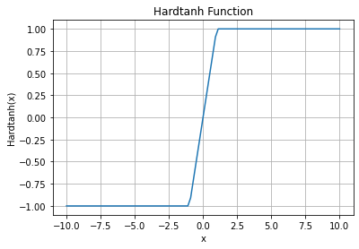

mindspore.nn.Hardtanh
- class mindspore.nn.Hardtanh(min_val=- 1.0, max_val=1.0)[source]
Applies the Hardtanh function element-wise. The activation function is defined as:
\[\begin{split}\text{Hardtanh}(x) = \begin{cases} 1, & \text{ if } x > 1; \\ -1, & \text{ if } x < -1; \\ x, & \text{ otherwise. } \end{cases}\end{split}\]Linear region range \([-1, 1]\) can be adjusted using min_val and max_val.
Hardtanh Activation Function Graph:
Note
On Ascend, data type of float16 might lead to accidental accuracy problem.
- Parameters
- Inputs:
x (Tensor) - Input Tensor with data type of float16 or float32. On CPU and Ascend support dimension 0-7D. On GPU support dimension 0-4D.
- Outputs:
Tensor, with the same dtype and shape as x.
- Raises
TypeError – If x is not a Tensor.
TypeError – If dtype of x is neither float16 nor float32.
TypeError – If dtype of min_val is neither float nor int.
TypeError – If dtype of max_val is neither float nor int.
ValueError – If min_val is not less than max_val.
- Supported Platforms:
AscendGPUCPU
Examples
>>> import mindspore >>> from mindspore import Tensor, nn >>> import numpy as np >>> x = Tensor(np.array([-1, -2, 0, 2, 1]), mindspore.float16) >>> hardtanh = nn.Hardtanh(min_val=-1.0, max_val=1.0) >>> output = hardtanh(x) >>> print(output) [-1. -1. 0. 1. 1.]